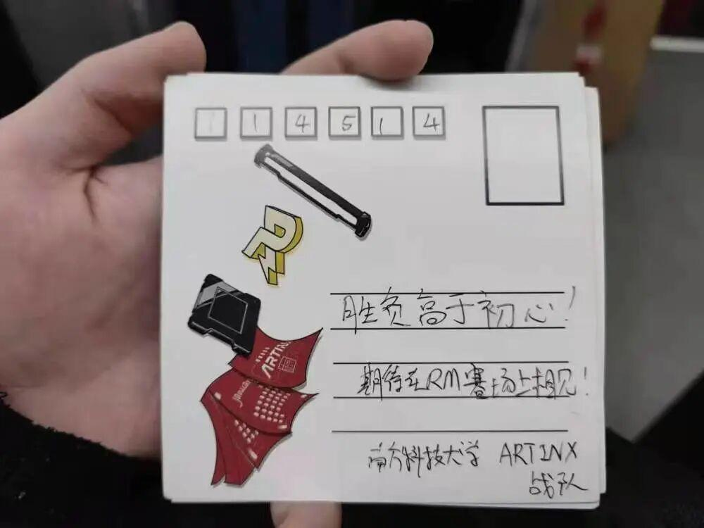

南科大&沈理の面基日常

南科大&沈理
面基日常
愿友谊长存

事情的起因让我说一张小小的明信片引发的黑历史，还不快点儿过来围观吗
话说那天天气晴朗，南科大的项管“一不小心”发现了明信片上的笔误，黑历史随之而来.
到底是胜负高于初心
还是初心位于胜负之上
这是一个值得深思的问题
“梦以为剑，征闯四方” ,面对困难的荆棘，我们要不忘初心，斩断通往成功路上的荆棘，去闯荡外面的大千世界，力争在RM的舞台上大放异彩
一段段和谐的微信聊天，联结的是两个学校、两个战队的友谊。最后，祝愿沈理和南科大共进国赛，实现机甲梦！！
@南方科技大学的同志们，愿我们的友谊长存，期待在RM的赛场上相见。
排版 | 小智
文字 | 小智
审核 | 恩嘉